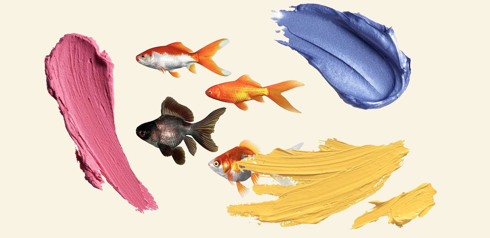

NU ER DET KREA TID

Hvorfor Være Kreativ?
Når kedsomheden begynder at tage overhånd, er det netop det rette tidspunkt til at lade kreativiteten blomstre. At være kreativ, selv når kedsomheden trænger sig på, kan have utallige fordele. Her er nogle grunde til, hvorfor det er en god idé at give slip på kreativiteten, når du har lidt fritid:
- Tidsfordriv: Når kedsomheden tager overhånd, kan kreativitet være den perfekte måde at fordrive tiden på. Du kan fordybe dig i et projekt eller en hobby, der ikke kun underholder dig, men også hjælper dig med at udvikle færdigheder.
- Inspiration: Kreativitet er som en kilde til inspiration. Når du udforsker nye ideer og skaber noget fra bunden, kan du finde inspiration til andre aspekter af dit liv. Det kan være en gnist, der tænder nye interesser eller ambitioner.
- Forbedrer humør: Kreativitet kan have en positiv indvirkning på dit humør. Det at skabe noget smukt eller meningsfuldt kan give dig en følelse af glæde og tilfredshed, hvilket er en glimrende måde at bekæmpe kedelig rutine.
Så næste gang du keder dig, skal du tage chancen for at være kreativ. Du behøver ikke være en professionel kunstner for at lade din kreativitet udfolde sig. Uanset om det er gennem kunst, håndværk, skrivning eller enhver anden form for udtryk, kan kreativiteten berige dit liv på mange måder og gøre kedsomhed til en mulighed for personlig vækst og glæde.